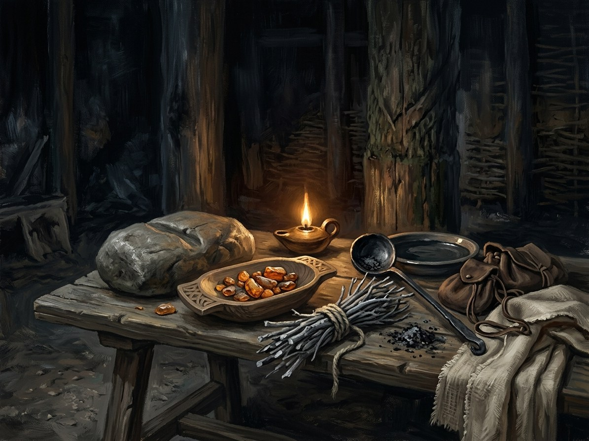

Žymė (claim)¶
What it is¶
A Žymė (claim): a god or Force marks a mortal as its instrument, without consent. It is granted power, not asked, and the Force’s own nature binds it, not the Three Laws.
Žymė (claim)

Žymė (claim) · school¶
Type |
school |
Family |
granted |
Note |
Žymė: supernatural mark or claim placed by a deity, force, or patron. |
Who can use it (path & tier)¶
No one chooses it. The claimed is an instrument, not a caster (no tier, though a vessel is tier 5). Patron: Perkūno Rūstybė. Examples: Kęstutis and Vytautas (Perkūnas), contested with the Root-Mother.
How it works (medium, words, timing)¶
The mark is felt: a rhythm in the fingers, a smell of ozone or sap, eyes that catch lightning; sometimes seen as a scar. At Krėva it is a heavy, slow beat “not his own pulse”, asked for by no one (Book I ch. 10, the mark). The Force acts through the claimed at moments of its choosing; he is not empowered at will.
Costs¶
Obedience to the Force’s nature. Perkūnas’s claimed must keep oaths; breaking them brings a blow (Book II ch. 5, 11, 26). At the right moment a claimed hand “knows which tree will be struck” before the lightning (Book IV ch. 1). The mark is release, too: it lets go when the work is done.
Limits & counters¶
A claim can be contested (Perkūnas and the Root-Mother both want Vytautas). It does not make a sorcerer; his power is political, not magical. A žynys reads it for him: Perkūnas set a mark at Krėva, and an oath sworn by a name the Force has marked binds the Force too (Book III ch. 17).
Folk basis [Historical record]¶
[Historical record]. There is no Baltic record of a “claim” system. Later folk belief treats lightning-struck trees and stones as holy and the person struck or spared as marked by Perkūnas. The saga turns that into a mechanism.
Notable practitioners¶
Kęstutis (Book VI ch. 13, 24, 28: “Perkūnas knows you”); Vytautas (Book I ch. 10, 19, 21; Book II ch. 5, 26; Book III ch. 17; Book IV ch. 1; Book V ch. 1). Pilkoji’s wolf-krikštas is a claim by the Root-Mother taken “against all custom” (Book III ch. 7).
Relations
Patrons: Perkūno Rūstybė
- School
- Granted power. The mortal does not initiate and does not consent
- Tier
- No tier: the claimed is an instrument, not a caster (a vessel is tier 5)
- Casting
- None. The god or Force marks the mortal
- Components
- None from the mortal. The mark is felt: a rhythm in the fingers, a smell of ozone or sap, eyes that catch lightning; sometimes a scar
- Cost
- Obedience to the Force's nature
- Duration
- Until the work is done. The mark lets go
- Limits
- The claimed is not empowered at will. The Force acts through him at moments of its choosing. It makes no sorcerer
- Counters
- A claim can be contested (Perkūnas and the Root-Mother both claim Vytautas). An oath sworn on a claimed name binds the Force too
Perkūnas's claim. Vytautas becomes the hand of justice and oath. Perkūnas rewards him when he keeps faith and strikes when he breaks it (Book I ch. 10, 19, 21).
The punishment. A claimed man who betrays the Force's nature is struck: the cracked window, the Vorskla verdict.
Breaking his oath. The Vorskla defeat is partly Perkūnas's verdict on Vytautas's oath-breaking (Book II ch. 26).
Connections¶
graph LR
claim["Žymė (claim)"]
perkuno_rustybe["Perkūno Rūstybė"]
perkuno_rustybe -->|Patron of| claim
style claim stroke-width:3px